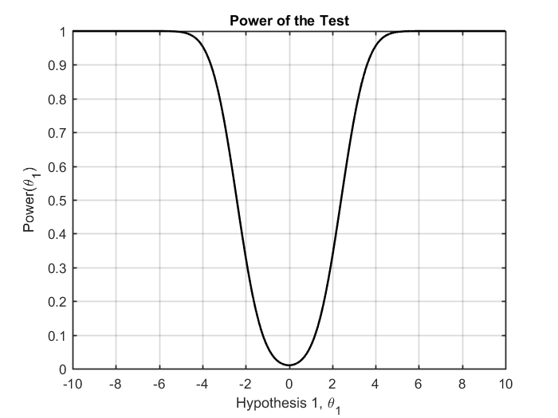
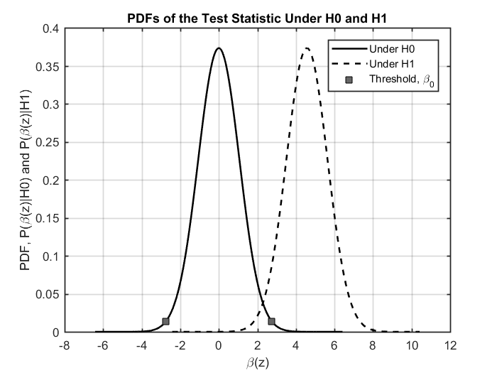

Contents
Prob - 7
clc; clear; close all;
P = [1 0.5;0.5 2];
alpha = 0.01;
Threshold
mu_beta_z = @(theta_1) sum(sum(inv(P)))*theta_1;
Var_beta_z = sum(sum(inv(P)));
beta_0 = -norminv(alpha/2,mu_beta_z(0),sqrt(Var_beta_z));
disp('Threshold \beta_0:')
disp(beta_0)
Threshold \beta_0:
2.7537
Power of test
theta_1_vec = -10:0.01:10;
mu_beta_z_vec = mu_beta_z(theta_1_vec);
power_vec = zeros(1,length(theta_1_vec));
for nn = 1:length(theta_1_vec)
power_vec(nn) = normcdf(-beta_0,mu_beta_z_vec(nn),sqrt(Var_beta_z));
power_vec(nn) = power_vec(nn) + 1-normcdf(beta_0,mu_beta_z_vec(nn),sqrt(Var_beta_z));
end
figure;
plot(theta_1_vec,power_vec,'Color','k','Linewidth',1.5)
xlabel('Hypothesis 1, \theta_1');
ylabel('Power(\theta_1)');
title('Power of the Test')
grid on
ax = gca;
ax.LineWidth = 1;
ax.GridColor = [0 0 0];
ax.MinorGridColor = 'k';

beta|H0 and beta|H1 PDFs
six_sigma = 6*sqrt(Var_beta_z);
del_beta_z_vec = linspace(-six_sigma,six_sigma,2000);
theta_1 = 4;
x_H0_vec = del_beta_z_vec;
x_H1_vec = del_beta_z_vec+theta_1;
pdf_beta_z_H0 = normpdf(x_H0_vec,mu_beta_z(0),sqrt(Var_beta_z));
pdf_beta_z_H1 = normpdf(x_H1_vec,mu_beta_z(theta_1),sqrt(Var_beta_z));
pdf_beta_0 = normpdf([-beta_0 beta_0],mu_beta_z(0),sqrt(Var_beta_z));
figure;
plot(x_H0_vec,pdf_beta_z_H0,'Color','k','Linewidth',1.5);hold on;
plot(x_H1_vec,pdf_beta_z_H1,'--','Color','k','Linewidth',1.5);
plot([-beta_0 beta_0],pdf_beta_0,'s','MarkerSize',7,...
'MarkerEdgeColor','k',...
'MarkerFaceColor',[0.4,0.4,0.4])
xlabel('\beta(z)');
ylabel('PDF, P(\beta(z)|H0) and P(\beta(z)|H1)');
title('PDFs of the Test Statistic Under H0 and H1')
legend('Under H0','Under H1','Threshold, \beta_0')
grid on
ax = gca;
ax.LineWidth = 1;
ax.GridColor = [0 0 0];
ax.MinorGridColor = 'k';
